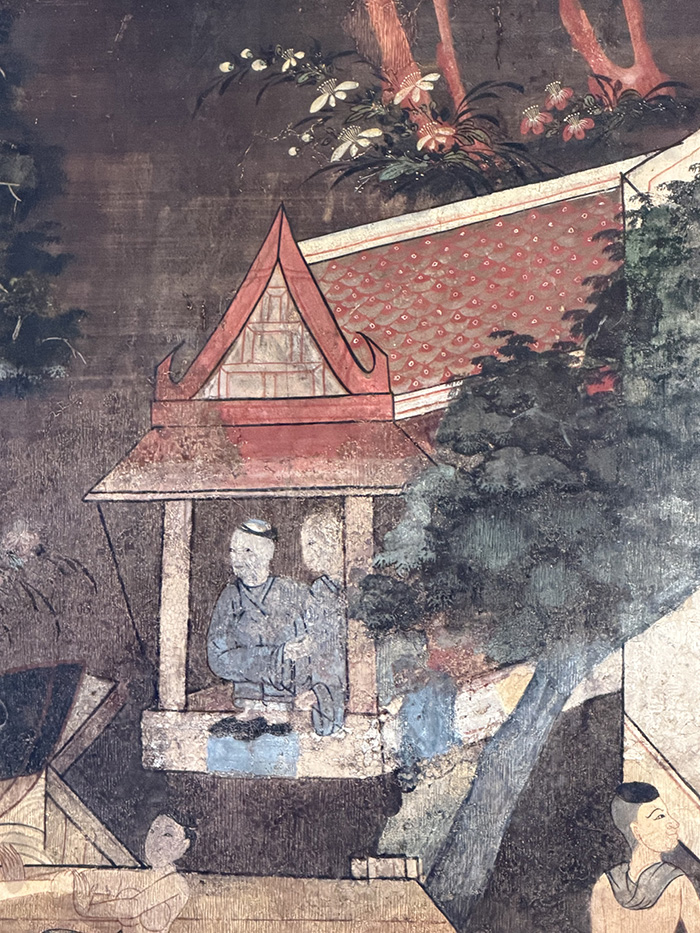
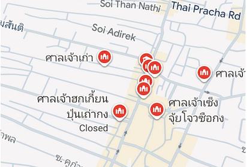
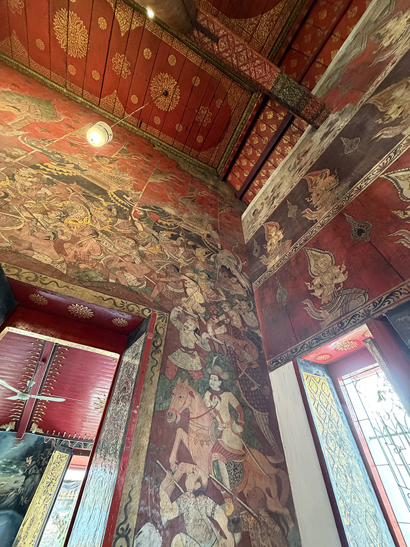

จุดเริ่มต้นของการอพยพที่ยาวนานกว่าที่คิด
หลายคนอาจเข้าใจว่าชาวจีน "เสื่อผืนหมอนใบ" เพิ่งเข้ามาในสมัยรัตนโกสินทร์ แต่แท้จริงแล้ว ชาวจีนเริ่มอพยพเข้ามาตั้งถิ่นฐานทางชายฝั่งตะวันออก รวมถึงชลบุรี ตั้งแต่ช่วงปลายสมัยกรุงศรีอยุธยา สาเหตุหลักมาจากการเกิดสงครามเปลี่ยนผ่านราชวงศ์ในจีน (จากราชวงศ์หมิงสู่ราชวงศ์ชิง) ทำให้ชาวจีนตอนใต้อพยพหนีภัยลงมายังเอเชียตะวันออกเฉียงใต้
หลักฐานสำคัญสมัยอยุธยา
ภาพจิตรกรรมฝาผนังภายในพระอุโบสถวัดใหญ่อินทาราม ซึ่งเป็นวัดเก่าแก่ที่สร้างขึ้นในสมัยกรุงศรีอยุธยา เป็นหนึ่งในหลักฐานชิ้นสำคัญที่ยืนยันการมีอยู่ของชุมชนชาวจีนในยุคนั้น โดยปรากฏภาพของชาวจีนโบราณไว้ผมหางเปียนั่งอยู่ในเรือ สะท้อนให้เห็นถึงวิถีชีวิตและการเดินทางค้าขายทางน้ำในพื้นที่ชลบุรีในอดีตอย่างชัดเจน


ร่องรอยแห่งศรัทธาและการรวมกลุ่มชุมชน
สิ่งที่ยืนยันถึงการลงหลักปักฐานอย่างมั่นคงของชาวจีนในย่านชุมชนโบราณอย่าง "บางปลาสร้อย" และพื้นที่โดยรอบ คือการมีศาลเจ้ากระจายตัวอยู่เป็นจำนวนมาก โดยเฉพาะของกลุ่ม "ชาวจีนฮกเกี้ยน" ที่เป็นกลุ่มบุกเบิกดั้งเดิม ซึ่งได้สร้างศาลเจ้าเก๋งและศาลเจ้ากวนอูไว้ นอกจากนี้ การมีโรงเจและโรงเรียนจีนในย่านนี้ ยังเป็นเครื่องยืนยันถึงความพยายามในการรวมกลุ่มเป็นชุมชนที่เข้มแข็ง เพื่อรักษาขนบธรรมเนียม ประเพณี และการสืบทอดวัฒนธรรมจากรุ่นสู่รุ่น

บทบาทสำคัญในหน้าประวัติศาสตร์
ชาวจีนฮกเกี้ยนในพื้นที่นี้ไม่ได้เป็นเพียงแค่พ่อค้า แต่ยังมีบทบาทสำคัญในทางการเมืองและการทหารด้วย เช่น"จีนเรือง" คหบดีชาวฮกเกี้ยนในย่านบางปลาสร้อย ที่ให้การช่วยเหลือและร่วมรบกับพระเจ้าตากสินมหาราช จนในเวลาต่อมาได้รับการสถาปนาเป็นขุนนางชั้นผู้ใหญ่ (ต้นราชสกุลสุนทรกุล ณ ชลบุรี)


การเข้ามาของ "ชาวจีนแต้จิ๋ว"
แม้ชาวจีนฮกเกี้ยนจะเข้ามาก่อนและเป็นรากฐานดั้งเดิม แต่ต่อมาในช่วงต้นกรุงรัตนโกสินทร์ ได้มีชาวจีนอพยพกลุ่มใหม่เข้ามาเป็นจำนวนมหาศาล นั่นคือ"ชาวจีนแต้จิ๋ว" ทำให้ในยุคต่อมาและในปัจจุบัน ชลบุรีจึงมีประชากรเชื้อสายจีนแต้จิ๋วเป็นกลุ่มที่ใหญ่ที่สุด
วิถีชีวิตและการผสมผสานกลมกลืน
ชุมชนชาวจีนในอดีตมักตั้งบ้านเรือนอยู่ริมทะเลและบริเวณปากน้ำ ประกอบอาชีพค้าขายและทำประมง เมื่อเวลาผ่านไป พวกเขาได้แต่งงานสร้างครอบครัวกับหญิงชาวไทย เช่น กรณีของ"หลวงอำนาจจีนนิกร" ขุนนางที่มีบิดาเป็นจีนแต้จิ๋วและมารดาเป็นคนไทย ท้ายที่สุดแล้ว วัฒนธรรมและการใช้ชีวิตก็ได้ถูกหลอมรวมเข้าด้วยกัน จนปัจจุบันแทบจะแยกไม่ออกและกลายเป็น "คนไทยเชื้อสายจีน" อย่างสมบูรณ์แบบ